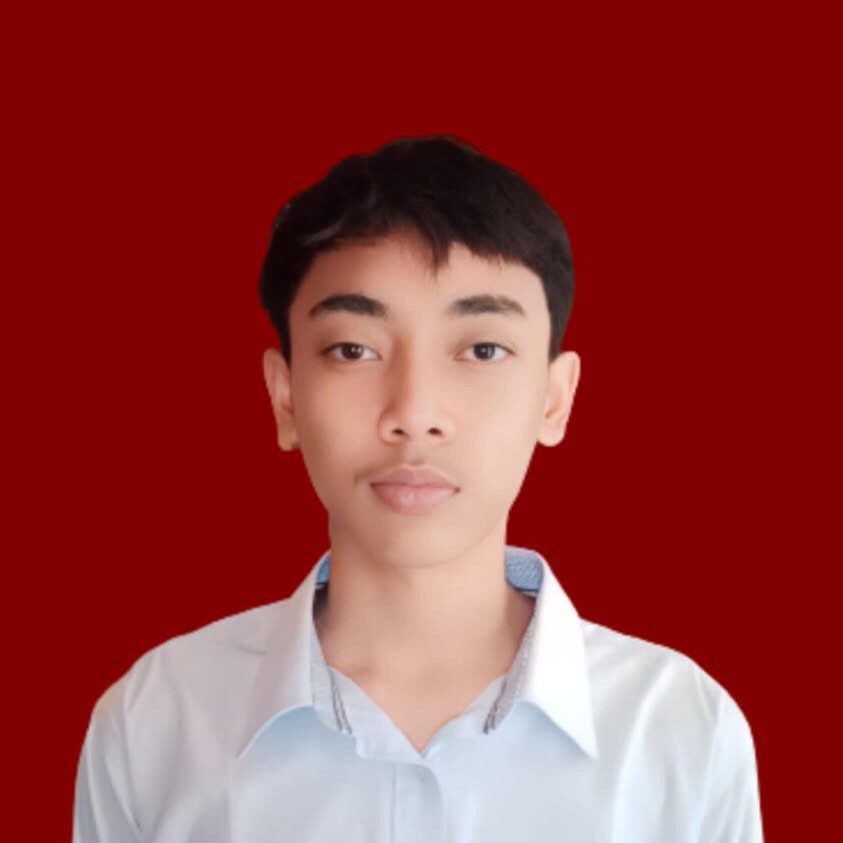
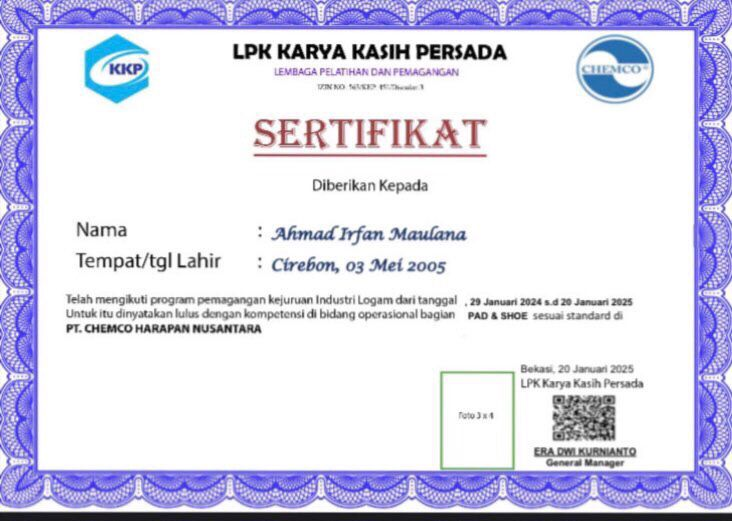
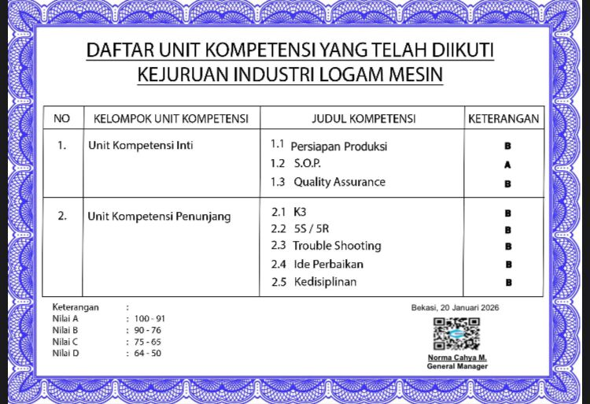
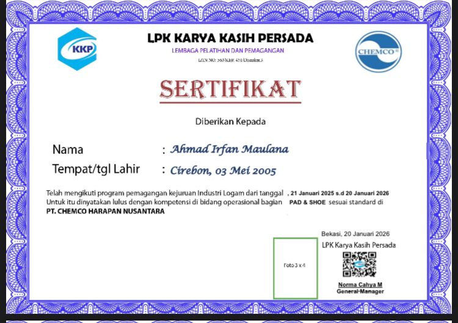
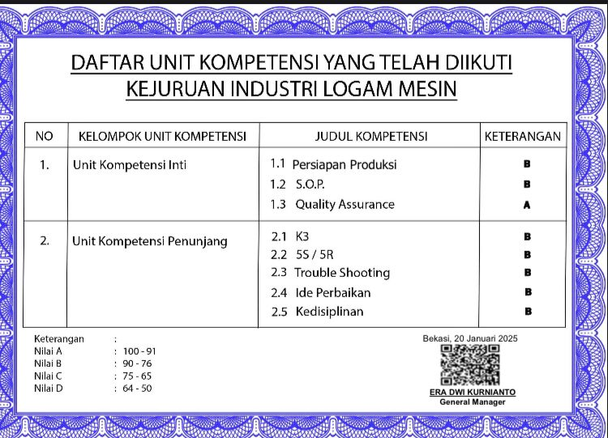

AHMAD IRFAN MAULANA
Operations Development Associate,
Perjalanan karier saya dimulai dari lingkungan operasional yang menuntut ketelitian, konsistensi, dan tanggung jawab tinggi. Pengalaman tersebut membentuk pola pikir saya bahwa sistem kerja yang efektif serta kepemimpinan yang tepat merupakan kunci utama dalam mencapai kinerja optimal. Saat ini, saya siap melangkah ke tahap berikutnya melalui peran Operations Development Associate untuk mengembangkan kemampuan analisis, kepemimpinan, serta memberikan kontribusi yang lebih strategis bagi perusahaan.
 LinkedIn
LinkedIn
 Instagram
Instagram
 WhatsApp
WhatsApp
 Email
Email
Tentang Saya
Saya adalah individu berusia 21 tahun yang disiplin, bertanggung jawab, dan memiliki motivasi tinggi untuk berkembang di bidang manajemen dan operasional bisnis. Dengan pengalaman kerja selama 3 tahun di industri manufaktur, saya terbiasa bekerja dalam lingkungan yang menuntut ketelitian, konsistensi, serta pencapaian target produksi sesuai standar operasional.
Pengalaman tersebut membentuk saya memiliki pemahaman yang baik terhadap efisiensi proses kerja, pentingnya kolaborasi tim, serta kemampuan problem solving dalam situasi operasional. Saya memiliki minat besar untuk mengembangkan karier pada jalur manajerial melalui posisi Operations Development Associate, dengan fokus pada peningkatan kemampuan analisis, kepemimpinan, dan pengambilan keputusan strategis..
Saya merupakan individu yang adaptif, cepat belajar, dan siap memberikan kontribusi optimal dalam mendukung kinerja dan pertumbuhan perusahaan.
Highlight
- 3+ Tahun Pengalaman Profesional di industri manufaktur dengan pemahaman kuat terhadap proses produksi end-to-end
- Target-Oriented Performer dengan disiplin tinggi terhadap SOP, standar kualitas, dan pencapaian KPI
- Analytical Problem Solver yang mampu mengidentifikasi akar masalah dan memberikan solusi efektif di lapangan
- High Ownership & Accountability dalam setiap tanggung jawab kerja dengan konsistensi performa
- Adaptive & Fast Learner yang mampu berkembang dalam lingkungan kerja yang dinamis dan bertekanan tinggi
- Strong Team Collaboration & Communication dalam mendukung kelancaran operasional dan pencapaian target tim
- Continuous Improvement Mindset dengan fokus pada efisiensi proses dan peningkatan kinerja operasional
- Future Leadership Track – siap berkembang ke peran strategis dan kepemimpinan melalui jalur pengembangan operasional
Sertifikat




Kontak
Email: ahmadirfanem@gmail.com
WhatsApp: 085722199562